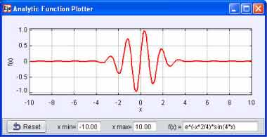

[The Analytic Function Plotter uses a parser to convert keyboard input into a mathematical expression.
A screen shot of exp(-x^2/4)*sin(4x) is shown.]
In order to build models that allow users to input functions, we need to convert a sequence of characters into a mathematical expression. Code that does this conversion is known as a parser. The Analytic Function Plotter model evaluates a function y = f(x) from xmin to xmax and autoscales the y-axis. The model used the Analytic Curve element to parser and to plot a function that is represented as a string. The string can be changed at any time and can contain the following functions:
The following EJS models demonstrate how to plot functions in EJS. These models are listed in order of complexity.
The Analytic Function Plotter model was created by Wolfgang Christian and Francisco Esquembre using the Easy Java Simulations (EJS) version 4.1 authoring and modeling tool. You can examine and modify a compiled EJS model if you run the model (double click on the model's jar file), right-click within a plot, and select "Open Ejs Model" from the pop-up menu. You must, of course, have EJS installed on your computer. Information about Ejs is available at: <http://www.um.es/fem/Ejs/> and in the OSP ComPADRE collection <http://www.compadre.org/OSP/>.